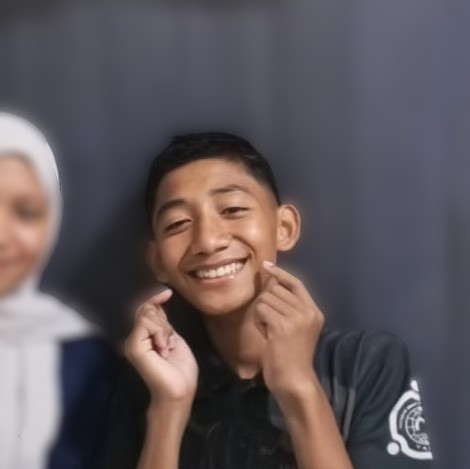

Core learning programs
Qur'an, Islamic studies, and Arabic.


Growing with purpose
A Qur'an-centred education shaped by knowledge, care, and character.
Qur'an, Islamic studies, and Arabic.
Tahfidz, Islamic learning, boarding guidance, and qualified asatidz.
Explore the website in English or Indonesian.


Pondok Pesantren Al-Munawwarah is an Islamic boarding school dedicated to nurturing students through Qur'anic memorization, Islamic studies, and a disciplined boarding life.
We combine traditional pesantren values with a structured academic program so that every santri grows in knowledge, worship, and everyday adab.
Guided memorization, muraja'ah, and beautiful recitation in a daily boarding routine.
Fiqh, aqidah, akhlaq, and sirah taught with the pesantren tradition of careful study.

Practical Arabic to understand the Qur'an, classical books, and daily conversation.

This form sends an initial admissions inquiry to the pondok. It is not a completed enrollment; our team will contact you about the next steps.
Enroll Your ChildA hands-on manasik experience helps santri learn the stages and meaning of Hajj.
Qur'anic study is at the heart of pondok life, alongside practical lessons, shared responsibilities, and activities that build confidence.


Al-Munawwarah offers a balanced pesantren education: Qur'an, Islamic knowledge, character building, and a caring boarding community.


These are draft opinions written for review by each speaker. Please confirm with them before publishing as personal statements.

I feel that the pondok helps me grow closer to the Qur'an while learning discipline, independence, and adab in daily life.

I value how Al-Munawwarah brings Qur'anic learning, worship, and care for students together every day.

I believe a caring routine helps santri feel supported as they learn, worship, and build good character.

I value the discipline and sense of responsibility the pondok encourages alongside learning and worship.

I appreciate how reliable technology can support learning and the pondok's daily activities.

For me, pondok life is about growing in knowledge and friendship while sharing worship and activities.